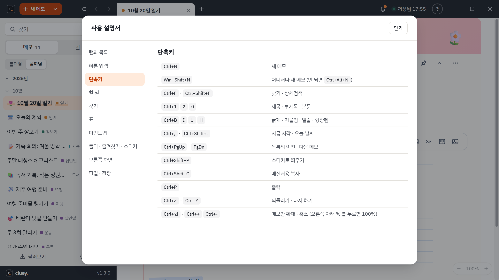

어디서나 새 메모
Win+Shift+N 을 누르면 Cluey 가 시계 옆에 숨어 있어도 새 메모가 바로 열립니다. 이 조합을 윈도우가 쓰고 있으면 Ctrl+Alt+N 을 누르세요. Cluey 안에서는 Ctrl+N 입니다.
미리보기 탭과 고정 탭
왼쪽 목록에서 메모를 한 번 누르면 미리보기 탭으로 열리고 제목이 기울어져 보입니다. 다른 메모를 누르면 그 탭이 바뀝니다. 남겨 두고 싶으면 그 탭을 눌러 고정하세요. 글을 고치면 저절로 고정됩니다. 휠 클릭은 항상 새 탭으로 엽니다.
나란히 놓고 보기
목록에서 Alt+클릭하면 그 메모가 오른쪽 화면에 열립니다. 양쪽 다 바로 고칠 수 있어서 옛 메모를 보며 새 메모를 쓰기 좋습니다. 가운데 막대를 끌면 너비가 바뀝니다.
글자 몇 개로 서식 넣기
줄 맨 앞에
#제목,##부제목,-글머리표,1.번호 목록,[]할 일,>인용 상자,---가로줄. 글 사이에서는**굵게**,==형광펜==입니다./ 로 표, 마인드맵, 단 나누기
/표/마인드맵/2단/3단을 치고 띄어쓰기를 누르면 들어갑니다. 단 칸 안에서는 Tab 이 옆 칸으로, Ctrl+Enter 가 칸 아래로 나갑니다. 자세히기한은 ~ 하나로
할 일 줄에서
~를 치면 달력이 뜹니다. 오늘 · 내일 · 이번 주 금요일 같은 빠른 날짜도 있습니다. 줄에 마우스를 올리면 나타나는 달력 단추로 나중에 바꿉니다. 자세히시각과 날짜 넣기
Ctrl+; 는 지금 시각(14:07), Ctrl+Shift+; 는 오늘 날짜(10.19 (월))를 본문에 넣습니다. 회의 시작 시각을 적을 때 편합니다.
자주 보는 메모는 스티커로
Ctrl+Shift+P 로 지금 메모를 바탕화면에 붙입니다. 스티커마다 색과 항상 위를 따로 정합니다. 자세히
초성으로 찾기
검색창(Ctrl+F)에
ㅎㅂㅁㄹ처럼 초성만 쳐도 됩니다.-낱말은 빼고,"구절"은 그대로 찾습니다. 폴더 · 참석자 · 날짜로 좁히려면 Ctrl+Shift+F 입니다.여러 메모를 한꺼번에
목록에서 Ctrl+클릭으로 하나씩, Shift+클릭으로 연속해서 고르면 위에 막대가 생기고 한꺼번에 지울 수 있습니다. 탐색기의 파일을 목록으로 끌어다 놓으면 불러오기도 됩니다.
메신저에 붙여 넣기 좋게 복사
Ctrl+Shift+C 는 글자만 깔끔하게 정리해 복사합니다. 소제목은 ■, 목록은 •, 할 일은 ☐ 로 바뀝니다. 메일에 붙일 때는 ⋯ 메뉴의 메일용 복사를 쓰세요.
빈 메모는 켤 때 정리
아무것도 쓰지 않은 메모가 쌓이면 켤 때 "작성하지 않은 빈 메모가 N건 있습니다. 삭제할까요?" 하고 묻습니다. 예 는 지우고, 나중에 는 다음에 다시 묻고, 아니오 는 지금 있는 것들은 다시 묻지 않습니다.
스크린샷은 그냥 붙여넣기
화면을 캡처해 Ctrl+V 하면 그림으로 들어갑니다. 네 모서리를 끌면 비율을 지키며 크기가 바뀝니다.
화면을 넓게, 글자를 크게
Ctrl+\ 는 왼쪽 목록을 접고 펴고, Ctrl+휠은 메모 글자만 키우고 줄입니다. 오른쪽 아래의 % 를 누르면 100% 로 돌아갑니다. 탭 사이는 Ctrl+Tab 이나 Alt+← →, 탭 닫기는 Ctrl+W 입니다.

전체 단축키 표는 Cluey 안의 도움말(물음표 단추)에도 있습니다. 기능별 설명은 기능 쪽에 있습니다.